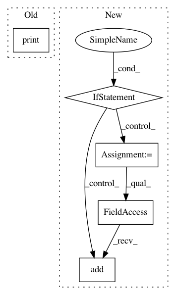

93618be71a23f12157497f7716e3e32a385e6680,keras_retinanet/callbacks/eval.py,Evaluate,on_epoch_end,#Evaluate#Any#Any#,40
Before Change
// print evaluation
for label, average_precision in average_precisions.items():
print(self.generator.label_to_name(label), "{:.4f}".format(average_precision))
print("mAP: {:.4f}".format(sum(average_precisions.values()) / len(average_precisions)))
After Change
self.mean_ap = sum(average_precisions.values()) / len(average_precisions)
if self.tensorboard is not None and self.tensorboard.writer is not None:
import tensorflow as tf
summary = tf.Summary()
summary_value = summary.value.add()
summary_value.simple_value = self.mean_ap
summary_value.tag = "mAP"
self.tensorboard.writer.add_summary(summary, epoch)
if self.verbose == 1:
for label, average_precision in average_precisions.items():
print(self.generator.label_to_name(label), "{:.4f}".format(average_precision))
print("mAP: {:.4f}".format(self.mean_ap))
In pattern: SUPERPATTERN
Frequency: 3
Non-data size: 5
Instances
Project Name: fizyr/keras-retinanet
Commit Name: 93618be71a23f12157497f7716e3e32a385e6680
Time: 2018-02-12
Author: mxvs112@gmail.com
File Name: keras_retinanet/callbacks/eval.py
Class Name: Evaluate
Method Name: on_epoch_end
Project Name: nipy/dipy
Commit Name: 14d296009281bee1b55ed42adffd6e8fe7975d6a
Time: 2018-08-13
Author: marc.cote.19@gmail.com
File Name: dipy/viz/tests/test_ui.py
Class Name:
Method Name: test_ui_radio_button
Project Name: nipy/dipy
Commit Name: 14d296009281bee1b55ed42adffd6e8fe7975d6a
Time: 2018-08-13
Author: marc.cote.19@gmail.com
File Name: dipy/viz/tests/test_ui.py
Class Name:
Method Name: test_ui_checkbox